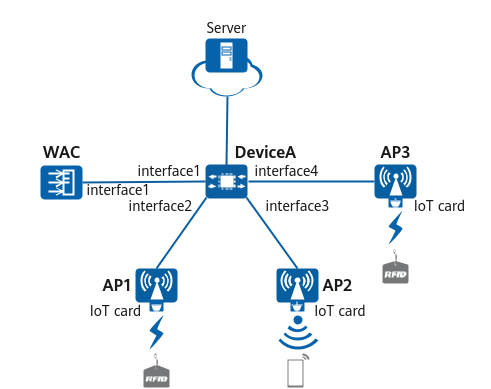

Example for Configuring an IoT Card Based on the Serial Port Protocol
Networking Requirements
A school pays much attention to safety of its students, deploys smart locks, and plans to use technical methods to query students' safety information. To meet these requirements, Huawei provides the Education IoT Solution that can reuse the existing WLAN of the school, as shown in Figure 1.
- WAC networking mode: Layer 2 off-path networking
- DHCP deployment mode: The WAC functions as a DHCP server to assign IP addresses to APs and STAs.

In this example, interface1, interface2, interface3, and interface4 represent 10GE0/0/1, 10GE0/0/2, 10GE0/0/3, and 10GE0/0/4, respectively.

Table 1 provides an example of data planning.
Item |
Data |
|---|---|
Management VLAN for APs |
VLAN 100 |
Service VLAN for STAs |
VLAN 101 |
DHCP server |
The WAC functions as a DHCP server to assign IP addresses to APs and STAs. |
IP address pool for APs |
10.23.100.2–10.23.100.254/24 |
IP address pool for STAs |
10.23.101.2–10.23.101.254/24 |
WAC's source interface |
VLANIF 100: 10.23.100.1/24 |
AP group |
|
Regulatory domain profile |
|
SSID profile |
|
Security profile |
|
VAP profile |
|
IoT profile |
|
Configuration Roadmap
- Configure network connectivity between the WAC, APs, and other network devices.
- Configure APs to go online.
- Create an AP group and add APs that require the same configuration to the group for unified configuration.
- Configure WAC system parameters, including the country code and WAC's source interface for communication with APs.
- Configure the AP authentication mode and import APs so that they can go online normally.
- Configure WLAN service parameters so that STAs can access the WLAN.
- Configure communication parameters between the APs and host computer.
Procedure
- Configure DeviceA, APs, and the WAC to communicate with each other.
# Configure DeviceA. Add 10GE0/0/1, 10GE0/0/2, 10GE0/0/3, and 10GE0/0/4 to VLAN 100 (management VLAN) and VLAN 101 (service VLAN).
<HUAWEI> system-view [HUAWEI] sysname DeviceA [DeviceA] vlan batch 100 101 [DeviceA] interface 10ge 0/0/1 [DeviceA-10GE0/0/1] portswitch [DeviceA-10GE0/0/1] port link-type trunk [DeviceA-10GE0/0/1] port trunk allow-pass vlan 100 to 101 [DeviceA-10GE0/0/1] quit [DeviceA] interface 10ge 0/0/2 [DeviceA-10GE0/0/2] portswitch [DeviceA-10GE0/0/2] port link-type trunk [DeviceA-10GE0/0/2] port trunk pvid vlan 100 [DeviceA-10GE0/0/2] port trunk allow-pass vlan 100 to 101 [DeviceA-10GE0/0/2] quit [DeviceA] interface 10ge 0/0/3 [DeviceA-10GE0/0/3] portswitch [DeviceA-10GE0/0/3] port link-type trunk [DeviceA-10GE0/0/3] port trunk pvid vlan 100 [DeviceA-10GE0/0/3] port trunk allow-pass vlan 100 to 101 [DeviceA-10GE0/0/3] quit [DeviceA] interface 10ge 0/0/4 [DeviceA-10GE0/0/4] portswitch [DeviceA-10GE0/0/4] port link-type trunk [DeviceA-10GE0/0/4] port trunk pvid vlan 100 [DeviceA-10GE0/0/4] port trunk allow-pass vlan 100 to 101 [DeviceA-10GE0/0/4] quit
# Configure the WAC. Add 10GE0/0/1 to VLAN 100 (management VLAN) and VLAN 101 (service VLAN).
<HUAWEI> system-view [HUAWEI] sysname WAC [WAC] vlan batch 100 101 [WAC] interface 10ge 0/0/1 [WAC-10GE0/0/1] portswitch [WAC-10GE0/0/1] port link-type trunk [WAC-10GE0/0/1] port trunk allow-pass vlan 100 101 [WAC-10GE0/0/1] quit
- Configure network connectivity between the APs and server.
Configure routes based on the actual networking situation to ensure network interworking between the APs and host computer.
- Configure the WAC as a DHCP server to assign IP addresses to APs and STAs.
# Configure the DHCP server based on interface address pools.
Configure a DNS server address as required. The common methods are as follows:- In an interface address pool scenario, run the dhcp server dns-list ip-address &<1-8> command in the VLANIF interface view.
- In a global address pool scenario, run the dns-list ip-address &<1-8> command in the IP address pool view.
[WAC] dhcp enable [WAC] interface vlanif 100 [WAC-Vlanif100] ip address 10.23.100.1 24 [WAC-Vlanif100] dhcp select interface [WAC-Vlanif100] quit [WAC] interface vlanif 101 [WAC-Vlanif101] ip address 10.23.101.1 24 [WAC-Vlanif101] dhcp select interface [WAC-Vlanif101] quit
- Configure APs to go online.
# Create an AP group to which APs requiring the same configuration can be added.
[WAC] wlan [WAC-wlan] ap-group name ap-group1 [WAC-wlan-ap-group-ap-group1] quit
# Create a regulatory domain profile, configure the country code of the WAC in the profile, and bind the profile to the AP group.
[WAC-wlan] regulatory-domain-profile name default [WAC-wlan-regulate-domain-default] country-code cn [WAC-wlan-regulate-domain-default] quit [WAC-wlan] ap-group name ap-group1 [WAC-wlan-ap-group-ap-group1] regulatory-domain-profile default Warning: This configuration change will clear the channel and power configurations of radios, and may restart APs. Continue?[Y/N]:y [WAC-wlan-ap-group-ap-group1] quit [WAC-wlan] quit
# Configure the WAC's source interface.
[WAC] capwap source interface vlanif 100 Set the DTLS PSK(contains 8-32 plain-text characters, or 128 or 148 cipher-text characters that must be a combination of at least tw o of the following: lowercase letters a to z, uppercase letters A to Z, digits, and special characters):******** Confirm PSK:******** Set the user name for FIT APs(The value is a string of 4 to 31 characters, which can contain letters, underscores, and digits, and m ust start with a letter):******** Set the password for FIT APs(plain-text password of 8-128 characters or cipher-text password of 128-268 characters that must be a co mbination of at least three of the following: lowercase letters a to z, uppercase letters A to Z, digits, and special characters):****** Confirm password:******** Set the PSK of the global offline management VAP(plain-text password of 8-63 characters or cipher-text password of 128-188 character s that must be a combination of at least two of the following: lowercase letters a to z, uppercase letters A to Z, digits, and speci al characters):******** Confirm PSK:********
# Enable the function of establishing CAPWAP DTLS sessions in none authentication mode.[WAC] capwap dtls no-auth enable Warning: This operation allows for device access in non-DTLS encryption mode even when DTLS is enabled and brings security risks. After the device goes online for the first time, disable this function to prevent security risks. Continue? [Y/N]:y
By default, DTLS encryption for CAPWAP control tunnels is enabled on the WAC. With this function enabled, APs fail to go online after being imported. In this case, enable the function of establishing CAPWAP DTLS sessions in none authentication mode so that the APs can obtain security credentials. After the APs go online, disable this function promptly to prevent unauthorized APs from going online.
# Import an AP on the WAC, and add the AP to the AP group ap-group1. Configure a name for the AP based on the AP's position, so that the AP can be easily located based on its name. For example, if an AP with the MAC address of 00e0-fc76-e360 is deployed in a classroom, name the AP room_1. If the APs with the MAC addresses of 00e0-fc76-e460 and 00e0-fc76-e560 are deployed inside and outside the school door, name the APs door_1 and door_2, respectively.
[WAC] wlan [WAC-wlan] ap auth-mode mac-auth [WAC-wlan] ap-id 1 ap-mac 00e0-fc76-e360 [WAC-wlan-ap-1] ap-name room_1 [WAC-wlan-ap-1] ap-group ap-group1 Warning: This operation may cause AP reset. If the country code changes, it will clear channel, power and antenna gain configuration s of the radio, Whether to continue? [Y/N]:y [WAC-wlan-ap-1] quit [WAC-wlan] ap-id 2 ap-mac 00e0-fc76-e460 [WAC-wlan-ap-2] ap-name door_1 [WAC-wlan-ap-2] ap-group ap-group1 Warning: This operation may cause AP reset. If the country code changes, it will clear channel, power and antenna gain configuration s of the radio, Whether to continue? [Y/N]:y [WAC-wlan-ap-2] quit [WAC-wlan] ap-id 3 ap-mac 00e0-fc76-e560 [WAC-wlan-ap-3] ap-name door_2 [WAC-wlan-ap-3] ap-group ap-group1 Warning: This operation may cause AP reset. If the country code changes, it will clear channel, power and antenna gain configuration s of the radio, Whether to continue? [Y/N]:y [WAC-wlan-ap-3] quit
# Power on the AP and run the display ap all command to check the AP state. If the State field displays nor, the AP goes online successfully.
[WAC-wlan] display ap all Total AP information: nor : normal [3] ExtraInfo : Extra information P : insufficient power supply Total: 3 ---------------------------------------------------------------------------------------------- ID MAC Name Group IP Type State STA Uptime ExtraInfo ---------------------------------------------------------------------------------------------- 1 00e0-fc76-e360 room_1 ap-group1 10.23.100.254 AirEngine5760-51 nor 0 51S - 2 00e0-fc76-e460 door_1 ap-group1 10.23.100.253 AirEngine5760-51 nor 0 45S - 3 00e0-fc76-e560 door_2 ap-group1 10.23.100.252 AirEngine5760-51 nor 0 25S - ----------------------------------------------------------------------------------------------
- Configure WLAN service parameters.
# Create the security profile wlan-net and configure a security policy in the profile.
In this example, the security policy is set to WPA-WPA2+PSK+AES and the password to YsHsjx_202206. In actual situations, configure the security policy based on service requirements.
[WAC-wlan] security-profile name wlan-net [WAC-wlan-sec-prof-wlan-net] security wpa-wpa2 psk pass-phrase YsHsjx_202206 aes [WAC-wlan-sec-prof-wlan-net] quit
# Create the SSID profile wlan-net and set the SSID name to wlan-net.
[WAC-wlan] ssid-profile name wlan-net [WAC-wlan-ssid-prof-wlan-net] ssid wlan-net [WAC-wlan-ssid-prof-wlan-net] quit
# Create the VAP profile wlan-net, set the service VLAN, and bind the security profile and SSID profile to the VAP profile.
[WAC-wlan] vap-profile name wlan-net [WAC-wlan-vap-prof-wlan-net] service-vlan vlan-id 101 [WAC-wlan-vap-prof-wlan-net] security-profile wlan-net [WAC-wlan-vap-prof-wlan-net] ssid-profile wlan-net [WAC-wlan-vap-prof-wlan-net] quit
# Bind the VAP profile wlan-net to radios 0 and 1 of APs in the AP group.
[WAC-wlan] ap-group name ap-group1 [WAC-wlan-ap-group-ap-group1] vap-profile wlan-net wlan 1 radio 0 [WAC-wlan-ap-group-ap-group1] vap-profile wlan-net wlan 1 radio 1 [WAC-wlan-ap-group-ap-group1] quit
- Configure an IoT card.
# Configure communication parameters between the APs and host computer.
[WAC-wlan] iot-profile name wlan-iot [WAC-wlan-iot-prof-wlan-iot] type common [WAC-wlan-iot-prof-wlan-iot] management-server server-ip 10.23.200.1 server-port 805 [WAC-wlan-iot-prof-wlan-iot] management-server server-ip 10.23.200.1 server-port 800 [WAC-wlan-iot-prof-wlan-iot] quit [WAC-wlan] ap-group name ap-group1 [WAC-wlan-ap-group-ap-group1] card 1 [WAC-wlan-ap-group-ap-group1-card-1] card connect-type serial [WAC-wlan-ap-group-ap-group1-card-1] iot-profile wlan-iot config-agent tcp port 50201 [WAC-wlan-ap-group-ap-group1-card-1] quit [WAC-wlan-ap-group-ap-group1] quit
Verifying the Configuration
# The WLAN service configuration is automatically delivered to the APs. After the service configuration is complete, run the display vap ssid wlan-net command to check VAP profile information. If Status in the command output displays ON, the VAPs have been successfully created for the corresponding AP radios.
[WAC-wlan] display vap ssid wlan-net WID : WLAN ID ----------------------------------------------------------------------------------------- AP ID AP name RfID WID BSSID Status Auth type STA SSID Radio Type ----------------------------------------------------------------------------------------- 1 room_1 0 1 00E0-FC76-E360 ON WPA/WPA2-PSK 1 wlan-net 11be 1 room_1 1 1 00E0-FC76-E370 ON WPA/WPA2-PSK 0 wlan-net 11be 2 door_1 0 1 00E0-FC76-E460 ON WPA/WPA2-PSK 1 wlan-net 11be 2 door_1 1 1 00E0-FC76-E470 ON WPA/WPA2-PSK 0 wlan-net 11be 3 door_2 0 1 00E0-FC76-E560 ON WPA/WPA2-PSK 1 wlan-net 11be 3 door_2 1 1 00E0-FC76-E570 ON WPA/WPA2-PSK 0 wlan-net 11be ------------------------------------------------------------------------------------------
# Run the display iot-profile name wlan-iot command to check the IoT profile configuration.
[WAC-wlan] display iot-profile name wlan-iot -------------------------------------------------------------------------------- Type : common Agent permit IP address : - Agent permit net-mask : - Management server IP address : 10.23.200.1 Management server port : 805 Management server IP address : 10.23.200.1 Management server port : 800 ExtManagement server IP address : - ExtManagement server port : - Share key : - Antenna status : - --------------------------------------------------------------------------------
Configuration Scripts
- DeviceA
# sysname DeviceA # vlan batch 100 to 101 # interface 10GE0/0/1 portswitch port link-type trunk port trunk allow-pass vlan 100 to 101 # interface 10GE0/0/2 portswitch port link-type trunk port trunk pvid vlan 100 port trunk allow-pass vlan 100 to 101 # interface 10GE0/0/3 portswitch port link-type trunk port trunk pvid vlan 100 port trunk allow-pass vlan 100 to 101 # interface 10GE0/0/4 portswitch port link-type trunk port trunk pvid vlan 100 port trunk allow-pass vlan 100 to 101 # return
- WAC
# sysname WAC # vlan batch 100 to 101 # dhcp enable # interface Vlanif100 ip address 10.23.100.1 255.255.255.0 dhcp select interface # interface Vlanif101 ip address 10.23.101.1 255.255.255.0 dhcp select interface # interface 10GE0/0/1 portswitch port link-type trunk port trunk allow-pass vlan 100 to 101 # capwap source interface vlanif 100 # wlan security-profile name wlan-net security wpa-wpa2 psk pass-phrase %+%##!!!!!!!!!"!!!!(!!!!*!!!!7LTnVOK_g:P(0L.)>b_*#Lf}!-lgAQ50~^%!!!!!2jp5!!!!!!>!!!!])4=/r=`2WNY 2h:%>Eb,L5KYE40RK6|UX29h+HkG%+%# aes ssid-profile name wlan-net ssid wlan-net vap-profile name wlan-net service-vlan vlan-id 101 ssid-profile wlan-net security-profile wlan-net regulatory-domain-profile name default iot-profile name wlan-iot management-server server-ip 10.23.200.1 server-port 800 management-server server-ip 10.23.200.1 server-port 805 ap-group name ap-group1 radio 0 vap-profile wlan-net wlan 1 radio 1 vap-profile wlan-net wlan 1 card 1 iot-profile wlan-iot config-agent tcp port 50201 ap-id 1 type-id 130 ap-mac 00e0-fc76-e360 ap-sn 210235419610D2000066 ap-name room_1 ap-group ap-group1 ap-id 2 type-id 130 ap-mac 00e0-fc76-e460 ap-sn 210235419610D2000067 ap-name door_1 ap-group ap-group1 ap-id 3 type-id 130 ap-mac 00e0-fc76-e560 ap-sn 210235419610D2000068 ap-name door_2 ap-group ap-group1 # return